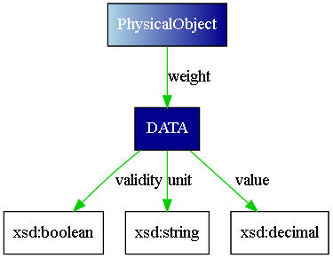
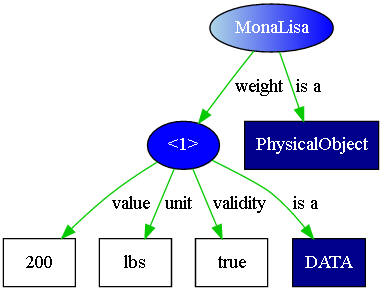
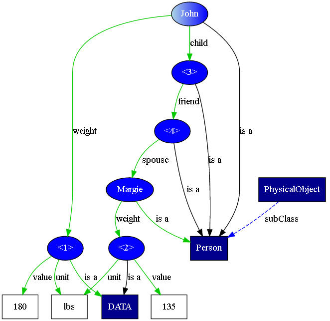

Note: Implied Properties are not completely implemented in SADL Version 3. They have been fully implemented and found useful in extensions of the SADL grammar including the ANSWER System's Dialog grammar. (See https://github.com/GEGlobalResearch/DARPA-ASKE-TA1/wiki.)
It is often the case in natural language that we use the name of a class to represent an instance of the class. Usually a preceding article indicates whether we are referring to a specific instance or to any instance. Consider, for example, the sentence "George is playing under the tree." The phrase "the tree" indicates a particular instance of the "tree" class. Which instance is presumably clear from context. By contrast, consider the sentence "Plan for the future--plant a tree." Here "a tree" indicates some unidentified member of the "tree" class.
As an extension of this kind of construct, it is also the case in natural language that class names are sometimes used as proxies for a particular value of an instance of the class. This is particularly the case when the existence of a class in the formal model is required in order to give additional information about a data value. In OWL a data value does not have identity and so cannot be the subject of a triple (statement), so an instance of a class is created to allow the additional information to be associated with the data value. For example, measurements often have not only a numeric value but also a unit. Below is part of a simple ontology capturing a conceptualization of measurement. It is expressed in the Semantic Application Design Language (SADL), which is a controlled-English representation that seeks to make semantic models more easily understood and authored by subject matter experts.
MeasurementSystem is a class, must be one of {SystemInternationale (alias "SI"), ImperialUnits, US_CustomaryUnits}.
Unit is a class, described by system with values of type MeasurementSystem.
Measurement is a class described by ^value with a single value of type double,
described by unit with a single value of type Unit,
described by timeStamp with a single value of type dateTime.
LengthUnit is a type of Unit, must be one of {Foot (alias "ft", "feet"), Meter (alias "m"), Centimeter (alias "cm"), Millimeter (alias "mm")}.
Using the above model, given the task of measuring a football field, on might say "The Measurement is 300". Someone might respond to this assertion by saying, "Oh, then the Measurement is in feet." To be consistent with the model, the first should have said, "The value of the instance of Measurement is 300" and the second "The unit of the instance of Measurement is Foot". The problem to be solved by implied properties is to allow a model builder to say things using just class or instance names rather having to say things in a complete, model-consistent way. This makes the expressions more natural, which is the objective of SADL. In fact, this capability has been demanded by users of the language.
The SADL grammar supports binary operations including comparison and assignment. In either case, the left hand side and the right hand side of the binary operation must be compatible. Implied properties are added by a validator or a translator to one or both sides of the expression for either of two purposes.
The SADL grammar supports the syntax of comparing a class or instance of a class to a value, including a value which is a number or a string. However, type checking by the validation function will identify such a comparison as an error when the two sides of the comparison are not the same type. And even if validation didn't complain, translators would generate output that cannot be processed or is unexpected. Both validators and translators must be aware of any special handling of the class or instance comparison with the value. This can be accomplished by designating "implied properties" on a class. This is done with an annotation property for two reasons. First, OWL DL, our target maximally expressive flavor of OWL, does not allow statements with user-defined OWL object properties to have classes as subjects or properties as values. But even if it did, we do not want reasoners trying to use the statements we make about implied properties. These are only for the validator and translator to use in their processes. Annotation properties are normally ignored by reasoners, as we would want this to be.
Therefore we add the following to our example model. (The definition of "impliedProperty" is shown here, but would not actually be part of the user model but is part of the SADL pre-defined, implicitly included concepts in SadlImplicitModel.sadl.)
impliedProperty
is
a type of annotation.
Measurement has impliedProperty ^value.
Measurement has impliedProperty unit.
When a validator or translator sees an apparent type conflict, e.g. comparing an instance of Measurement to an incompatible value, e.g., a number, it will look for implied properties associated with the class specified, or the class to which a specified instance belongs. If there is an implied property whose range is compatible with the value in the comparison, it will insert that value to create a "property of" construct, e.g., "value of Measurement", "unit of Measurement".
Clearly a validator or translator would not be able to add the implied property to make types match if the class has more than one implied property with a given range. Even specifying two properties as implied if their ranges are close, e.g., decimal and float, may be less reliable in practice as the values would have to be specified carefully to make sure they match the desired property even though the value would work with the other property.
When an object property is used in a comparison, one usually expects the condition tested to be if the two sides of the comparison return the same individual, as identified by URI. For example, suppose a conditional statement has this comparison:
Example 1: input_1 of SystemB is input_2 of SystemB
The left side expression (input_1 of SystemB) is a triple pattern with subject "SystemB" and predicate "input_1". When evaluated against the model graph it should identify 0 or more instances (individuals) which are objects of triples with that subject and predicate. The type of matching instances should match the range of the property "input_1". Likewise the right side of the comparison should evaluate to 0 or more individuals whose type matches the range of "input_2". If both the left and right sides evaluate to 1 or more individuals, and each evaluation set contains the same individual(s), the condition is true.
However, sometimes we do not actually want to compare identities but rather compare a specified set of properties of the individuals identified on the left and right hand sides. Perhaps what we really want to compare is this:
Example 2: _value of input_1 of SystemB is _value of input_2 of SystemB and _validity of input_1 of SystemB is _validity of input_2 of SystemB
Exactly the same possibility exist with assignment statements. If the first example above were in an assignment statement we would normally want the left-hand side to create a new triple with "SystemB" as subject, "input_1" as predicate, and as object an individual which is the object of the triple matching the pattern on the right side. But suppose our desire is not to assign the actual individual identified by the pattern on the right as the value of the triple on the left, but rather to assign a specified set of property values as suggested by the second example above.
As with type checking, implied properties can provide a way to accomplish this expansion by adding to the property chain on each side of the expression. However, in this case we do not have the limitation that two properties with the same range would be problematical. In order to not be so restricted we choose to introduce a different annotation property for this use of implied properties. We call this kind of implied property "expandedProperty".
Therefore, specifying that the expansion from the first example above to the second example should happen automatically when a comparison or assignment is encountered, where the individual(s) involved belong to a particular class, can be accomplished by designating "expandedProperty" on the class. The following definition of "expandedProperty" is part of the SADL pre-defined, implicitly included concepts in SadlImplicitModel.sadl.
expandedProperty is a type of annotation.
Continuing the examples above, suppose that our ontology contains the following:
DATA is
a class.
_value describes DATA with values of
type
decimal.
_validity describes
DATA
with
values of type boolean.
input_1 describes SYSTEM with values of
type
DATA.
input_2 describes SYSTEM with values of
type
DATA.
We can now add the following statements to our user-defined model:
DATA has
expandedProperty
_value.
DATA has
expandedProperty _validity.
When a translator sees a comparison involving an instance of "DATA" as is found in Example 1, it will look for statements with "expandedProperty" with the class as subject. If there are expanded properties, the translator will replace the original comparison or assignment statements with the expanded statements as found in Example 2. In other words, given these expandedProperty statements for the class DATA, a translator would translate the first example above exactly as if it had been expressed as the second example above. Expanded properties are entirely about reducing the level of detail in certain statements with the intent of making sets of statements easier to read and write.
As an alternative way of understanding implied properties, consider them from a graph model perspective. In the domain model (AKA t-box), we define classes, properties, and property domain and range classes. Suppose, for example, that we define the following, shown in SADL syntax.
DATA is a class,
described by value with a single value of type decimal,
described by validity with a single value of type boolean,
described by unit with a single value of type string.PhysicalObject is a class,
described by weight with values of type DATA.
Thus the properties value, validity, and unit all have domain DATA and ranges xsd:decimal, xsd:boolean, and xsd:string, respectively. The property weight has domain PhysicalObject and range DATA. As a visual graph, the domain model looks like this.

To complete the picture, consider a small amount of instance data for the domain.
MonaLisa is a PhysicalObject with weight (a DATA with ^value 200, with unit "lbs", with validity true).
Viewed as a graph, it looks like this.

The "<1>" in the graph signifies a blank node, given the identifier "<1>" to distinguish it from other blank nodes in the graph. Now suppose that I want to query my triple store. I might ask
weight of MonaLisa (in SPARQL, namespaces omitted, "select ?w where {<MonaLisa> <weight> ?w}")
This query would return the blank node designated "<1>" in the graph. Using Jena, the result is "w = -1f420ac5:15b49f44305:-5089(blank node)". Hardly what a naive user would expect.
Now let us use implied properties. Since we are not concerned with type checking but rather with expansion, we use "expandedProperty". Let's add to our domain model the following.
DATA has expandedProperty value.
DATA has expandedProperty unit.
DATA has expandedProperty validity.
Now if I ask the same question the answer will be "w->value = 200, w -> unit = "lbs", w -> validity = true".
In natural language we are not limited to a single triple statement (subject, predicate, object) per sentence, but we often create chains of relationships. Consider this snippet of OWL data (in which "validity" is dropped for simlicity).
Margie is a Person with weight (a DATA with value 135, with unit "lbs").
John is a Person with weight (a DATA with value 180, with unit "lbs").
John has child (a Person with friend (a Person with spouse Margie)).
Shown as a visual graph, this data looks like this. There are two unnamed instance nodes of type Person in the property chain connecting John and Margie.

Consider these two statements.
Ask: select p where p has child with friend with spouse Margie.
Ask: select q where q is the spouse of a friend of a child of John.
The first query looks for a pattern with a "forward" property chain from an unbound variable "p" to the instance node "Margie". The second query looks for a pattern with a "backward" property chain from an unbound variable "q" to the instance node "John". Given the example data set, the first query will return a single possible binding for "p = John", the second the single possible binding "q = Margie".
Now suppose that we modify the second query above slightly
Since the range of "weight" is "DATA", and "DATA" cannot be compared ("<") the number 150, we again would look for an implied property ("impliedProperty" since we are type checking) to make sense of the query and we find one in "value". Therefore the translated query is
or in SPARQL it is
where variable "x" corresponds to node "<3>" in the graph, "y" corresponds to node "<4>", "z" will be bound to "Margie", "w corresponds with node "<2>", and "wv" will be bound to "135".
As another, non-query, example of using implied properties in expansions, suppose that one had the following comparison in a rule premise: "weight of X = weight of Y". (Other rule premise conditions would bind variables X and Y, e.g., a binding might yield "weight of MonaLisa = weight of JohnDoe.") This comparison, in the presence of "expandedProperty" values "value", "unit", and "validity" on class DATA, if all three of the following statements were true.
- value of weight of MonaLisa = value of weight of JohnDoe
- unit of weight of MonaLisa = unit of weight of JohnDoe
- validity of weight of MonaLisa = validity of weight of JohnDoe